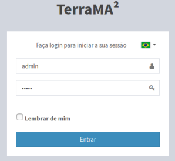

Usuários
Para acesso ao módulo de administração é necessário uma conta de um usuário. A plataforma TerraMA2 dispõe de dois tipos de usuários; usuário administrador e usuário não administrador. Para manipular as contas de usuário somente um com privilégio de administrador poderá fazer. Por default uma conta de administrador será criada na instalação da plataforma com as seguintes características:
- Usuário: admin
- Senha: admin
- LOGIN DE USUÁRIO
Para acesso ao módulo de administração o usuário poderá fazer de uma máquina local (no mesmo computador onde está instalado e inicializado a plataforma) ou remota (em outro computador). Após a instalação da plataforma e todas as dependências (ver Manual de Instalação), abra o navegador de sua preferência e digite “http://localhost:36000” para acesso local. Para acesso remoto, consulte o administrador de sua rede para se informar do endereço a ser digitado. O navegador deverá apresentar a interface da Figura 2.2. Digite seu login e senha para ter acesso ao módulo de administração.

Figura 2.2 – Janela de Login de Usuário.
As opções de manipulação de usuário são:
Para adicionar um novo usuário é necessário que um usuário com perfil de administrador esteja conectado. No menu “Administração” escolha “Usuários” para a lista de usuários disponíveis ser apresentada na área de trabalho. Clique no botão “ + ” para adicionar novo usuário. Utilize o botão “Salvar” para salvar o usuário. Não é permitido nome de usuário em duplicidade. Botão “Cancelar” volta à tela anterior sem salvar o usuário. Detalhes da adição de um novo usuário veja aqui.
Para remover um usuário somente um com privilégio de administrador poderá fazer. No menu “Administração” clique “Usuários” para apresentar a lista de usuários disponíveis na área de trabalho. Na frente do nome do usuário clique em “Remover”. Clique o botão “OK” para confirmar remoção.
NOTA: Atenção ao remover um usuário, pois todos os projetos desse usuário serão removidos e não poderão ser recuperados. Se desejar ter uma cópia do projeto de um usuário que será removido, sugere-se exportar o projeto antes de realizar essa remoção.
- EDITANDO PERFIL DO USUÁRIO:
Para editar os dados do usuário corrente, o mesmo deve estar conectado a plataforma. Clique no menu “Perfil” para que os dados sejam apresentados na área de trabalho. Utilize o botão “Salvar” para salvar as alterações. Botão “Cancelar” volta à tela anterior sem salvar.
- RECUPERANDO SENHA DE UM USUÁRIO:
Para recuperar a senha de um usuário, somente um administrador poderá fazer. Neste caso, uma nova senha temporária será fornecida para que o usuário altere posteriormente. No menu “Administração” clique “Usuários” para apresentar a lista de usuários disponíveis na área de trabalho. Clique sobre o nome de usuário desejado e nos campos “Senha:” e “Confirmar Senha:” digite o novo valor. o botão “Salvar” para confirmar atualização.
Created with the Personal Edition of HelpNDoc: What is a Help Authoring tool?